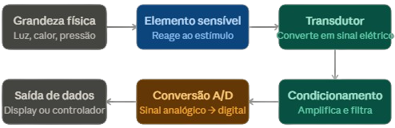
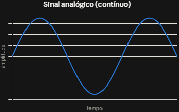
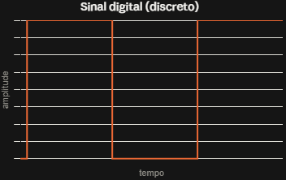
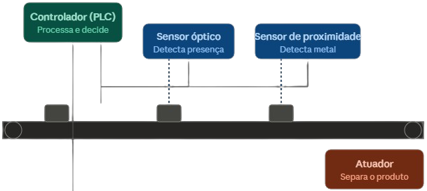

O QUE SÃO SENSORES?
A evolução da tecnologia trouxe sistemas capazes de monitorar, analisar e controlar processos automaticamente. Dentro desse contexto, os sensores desempenham um papel fundamental: obter informações do ambiente físico e transformá-las em sinais interpretáveis por sistemas eletrônicos.
Um sensor é um dispositivo que detecta uma grandeza física, química ou ambiental e produz uma saída mensurável relacionada a ela. A grandeza detectada é chamada de variável de processo ou variável física.
Exemplos: temperatura, pressão, luz, movimento, distância, corrente elétrica e presença de gases.
O PROCESSO DE SENSORIAMENTO

Figura 1: Princípio básico do sensoriamento (Variável Física → Sensor → Sinal Elétrico)
Sensoriamento é o processo de detectar ou medir uma determinada grandeza utilizando um sensor. O sensor converte uma característica do ambiente em um sinal mensurável, que pode ser posteriormente interpretado por um microcontrolador, computador ou CLP.
Exemplos de sensoriamento:
- Temperatura → sinal elétrico
- Pressão → sinal elétrico
- Luz → alteração de resistência ou sinal digital
- Movimento → sinal digital
- Distância → tempo de propagação de onda
- Corrente → sinal proporcional à corrente
- Gás → alteração da propriedade elétrica do sensor
SENSOR x TRANSDUTOR
Embora relacionados, sensor e transdutor não são sinônimos. O sensor detecta e mede uma grandeza, enquanto o transdutor converte uma forma de energia em outra, produzindo uma saída utilizável. Na prática, esses conceitos aparecem juntos, pois todo sensor possui um elemento transdutor em sua composição.
Por exemplo: um sensor de temperatura LM35 converte a temperatura em uma tensão elétrica proporcional — ele é tanto sensor quanto transdutor.
CARACTERÍSTICAS IMPORTANTES
Principais parâmetros para escolha de sensores
CLASSIFICAÇÃO DOS SENSORES

Figura 2: Exemplo de sinal analógico (contínuo)

Figura 3: Exemplo de sinal digital (discreto)
VANTAGENS E LIMITAÇÕES

Figura 4: Sensores aplicados em uma linha de produção automatizada
Vantagens
- Automação de processos
- Monitoramento contínuo
- Redução da intervenção manual
- Identificação de anormalidades
- Otimização de processos
- Controle remoto
- Apoio à manutenção preditiva
Limitações e Desafios
- Calibração necessária para manter qualidade
- Influência do ambiente (temperatura, umidade, interferência)
- Nenhum sensor é perfeitamente exato
- Falhas na comunicação podem interromper dados
- Segurança em sistemas IoT conectados
- Manutenção e substituição periódica